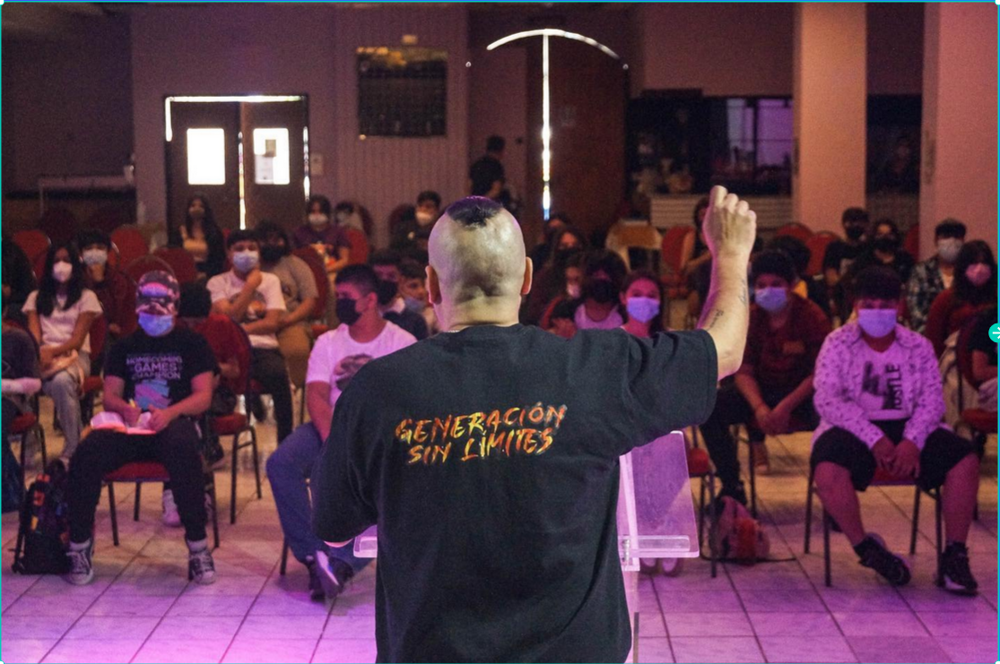
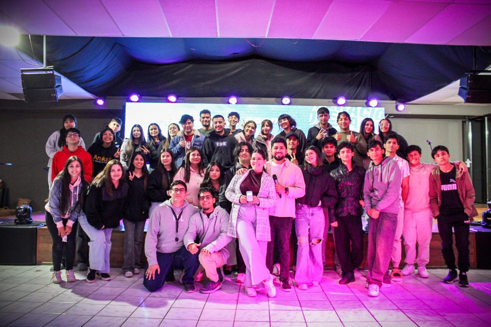
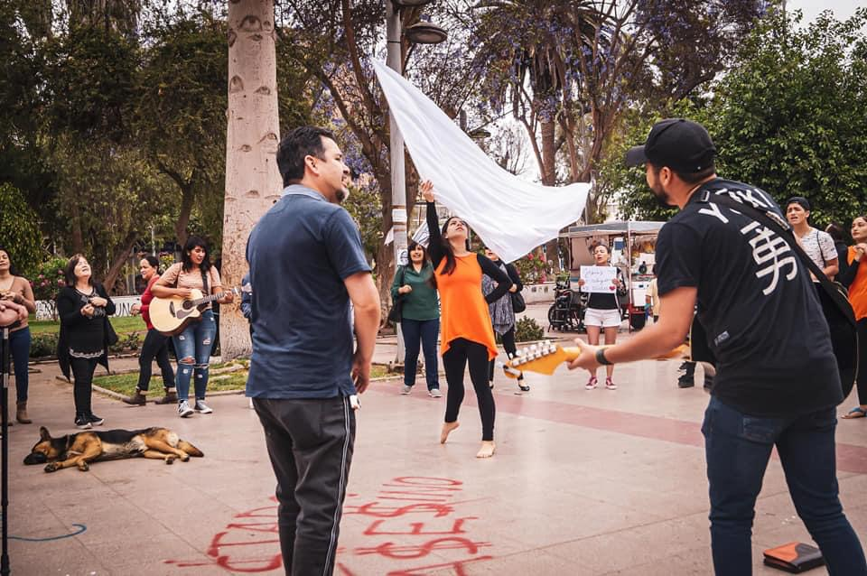
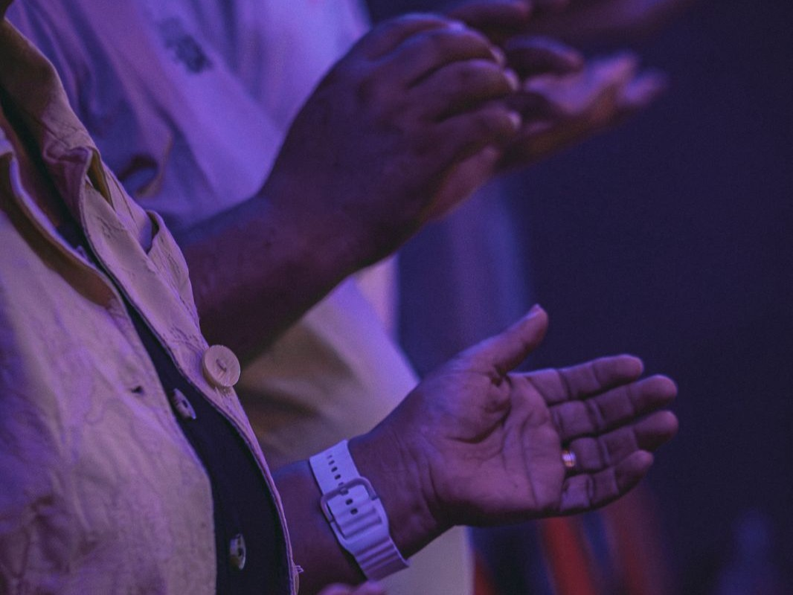

Oración
Intercesión
Grupo de oración para buscar a Dios en unidad y levantar peticiones con fe cada semana.
Ver másEn IPROYEC creemos que la vida cristiana también se fortalece en espacios cercanos, constantes y llenos de propósito. Aquí podrás conocer los grupos y actividades que actualmente se encuentran activos.
Somos una iglesia mutifuncional, podras encontrar un grupo adecuado para ti
Grupo de oración para buscar a Dios en unidad y levantar peticiones con fe cada semana.
Ver más
Un espacio dinámico y creativo para prejuveniles de 10 a 15 años, enfocado en crecer en la fe.
Ver más
Comunidad juvenil para vivir discipulado, comunión y un amor genuino por Dios.
Ver másEncuentros en distintos sectores de la ciudad, con casas asignadas para crecer en comunidad.
Ver más
Espacios para compartir el evangelio, servir a la ciudad y llevar el mensaje de esperanza.
Ver más
Intercesión es un espacio dedicado a la oración constante, la búsqueda de Dios y el acompañamiento espiritual de la iglesia. Aquí nos reunimos para levantar peticiones, dar gracias y afirmar nuestra fe en comunidad.
Un espacio pensado para prejuveniles de 10 a 15 años, donde pueden aprender la Palabra, compartir con otros de su edad y vivir la fe de una forma creativa, cercana y dinámica.
Comunidad de jóvenes donde se vive discipulado, comunión y un amor genuino por Dios. El grupo se divide en dos tramos etarios para acompañar de mejor forma cada etapa, manteniendo el mismo espíritu de unidad y crecimiento.
Liderado por: Matrimonio Flores Levano
Liderado por: Matrimonio Olguin Olguin
Casa de Reino es un tiempo de estudio y comunión en hogares, organizado por sectores de la ciudad. Cada sector tendrá una casa asignada y un líder responsable, permitiendo que más personas puedan reunirse cerca de su entorno, fortalecer vínculos y profundizar en la Palabra en un ambiente más cercano y familiar.
Espacio enfocado en llevar el mensaje de Jesús a otros, ya sea en actividades evangelísticas, salidas a terreno, instancias de oración o acciones de servicio. Es una oportunidad para compartir la fe con amor, valentía y sensibilidad por las personas.